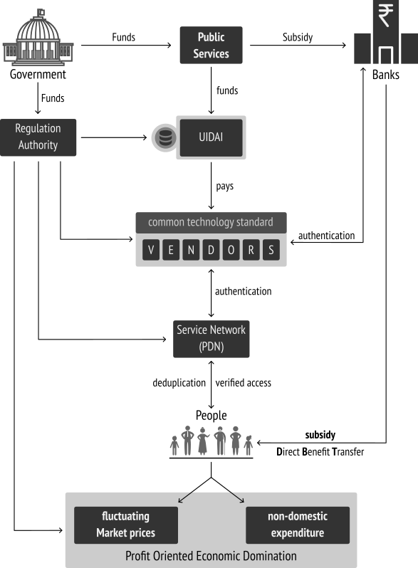

Hey there unique id critics, activists, & establishment supporters !
DISCLAIMER :
The following are my views about the Unique Id. system implemented in India, which is now branded
as Aadhaar. I still believe, that having and sharing my views and thoughts, is still possible, with liberties
gauranteed by Indian Constitution, to its law abiding Citizens, which is fundamentally founted from the
values of freedom, democracy, liberty, equality, secular nature, civil disobedience... that would rescue me from facing
police brutality & sedition. Yes, i am legally an Indian citizen. But there is no reason to submit my proof of citizenship
to anybody who desperately needs it. It is my liberty and consent to decide whether to provide it or not. If any
establishemnt or government officials, supporters felt repulsed by this, executing some dumb actions based on despair, then
it would be a best proof, that they are the perfect examples of dissent supression, & of conservational coercion attitude.
WHY ? WHY ? WHY ?
Why am i writing this, when i have other interesting to do ? Basically, i dont like complaining about stuff,
crying around a problem, without atleast moving a stick or even trying that ! But literally we are in a situation
where critical thinking and open progressive discussion becoming few and rare. These days common people discussing
about social, economic, political environment, systems itself is considered as a rebellious attitude by the
governments and establishments. In India especially, every peaceful protest demonstrated by common people have been
systematically oppressed, subjugated, hindered since republic. As a result of continuous and cumulative
thoughts in my mind - sometimes, -- no most of the times -- i ask myself :
am i part of this republic nation that ensured liberty in its constitution ?
am i really living in a socialist democratic republic nation ?
does others feel the same way i do ?
TIMELINE
Thinking about when did i actually started following Aadhaar & UIDAI, i cannot exactly pin
point the date. As per my personal document collection from mainstream media and internet, it seems
somewhere around late 2010 i have got so much interested in it. So i thought it would be good to
have a recorded timeline of events and occurences that have influenced people so much for 10+
complete years. Obviously, i have collected the data from Wikipedia,
SFLC,
Hindu business line
websites & documents which i have saved so far.
For those who are interested in this timeline data, i have made it using JSON, and feel free to download
and share it with your peers, whenever you find it needed. Thanks to timelinejs team of knightlab, for
creating it.
Liberty is not a means to a higher political end. It is itself the highest political end.
It is not for the sake of a good public administration that it is required, but for security
in the pursuit of the highest objects of civil society, and of private life.
- John Dalberg-Acton
If a law is unjust, a man is not only right to disobey it, he is obligated to do so.
- Thomas Jefferson
An unjust law is itself a species of violence. We must never submit to unjust laws. Never. And our
resistance must be active and provocative.
- M.K. Gandhi
LETS THINK & ACT
Liberty without learning is always in peril, and learning without liberty is always in vain.
People as a collective entity come into being only through the basic constitution. It is by agreeing to a basic set
of norms about how one should be governed, and who should be governed that one forms a collective identity.
Political Identity:
One has many sets of identities that exist prior to a constitution. But by agreeing to certain
basic norms and principles one constitutes one’s basic political identity.
Moral Identity:
Constitutional norms are the overarching framework within which one pursues individual aspirations,
goals and freedoms. The constitution sets authoritative constraints upon what one may or may not do.
It defines the fundamental values that we may not trespass. So the constitution also gives one a
moral identity.
Ethnic Identity:
Indian Consititution, does not make ethnic identity a criterion for Citizenship.
National Identity:
Relationship between different regions of the nation & central government constitutes the
national identity of the country.
Type of identities listed above in NCERT book are the identities that have the purpose of social interaction with the people
and the systems surrounding the individual. Primary purpose that these identities founts from the acceptance of
common set of principles which the people agreed to live upon. So whenever a identity is requested based on a probably
cause by the people or authority from the government, then the individual shall produce the document/card/number that
directs to their social identity (think drivers license, passport, ration card, PAN card...). So we shall safely call these
kind of identities as Social Identity.
Usually social identity are generated based on readily visible, recognizable factors (think photograph...). Afterall, humans
interact with each other mostly based on visual communication. We are well aware that communication requires
identification. Uniqueness in identification for establishing a proper communication is derived from interaction.
where identity founts from ?
Personal Identity:
On the other hand, Personal Identity is not only inherently unique, but also personal in nature. The uniqueness
in this case is derived from the privately physical, biological, behavioral patterns. Such factors falls within the
opaque private sphere of the individual person, which they will not compromise with sense. This is where abstract
concepts like mental and bodily integrity founts from, that further gauranteed not to be tresspassed by systems
outside the personal sphere - by the constitution in a democratic nation. The privacy here is actually the phenomenon of
control over such traits. Since, the person is not willing to expose their introspective interactions, it
is represented abstractly such as personality, intimacy, right to left alone, right to have confidentiality, anonymity,
right to have secrecy, right to have faith & desires over their thought process and their life in general. A democratic
governance cannot penetrate through such walls.
NOTE:
personal identity can be unique, but deeply intertwined with personal liberty, which shall not be tresspassed by any external influences.
personal identity by birth nature everyone has got some or more unique forms (think personas) manifested physically, biologically & mentally.
personal identity cannot limit itself to biometric information and includes behaviometric information too.
social identity is a agreed form of identification between the individual and society, that helps for mutual identification.
social identity is either provided or requested in order to access a public benefit or service from the governance.
transferring key identification traits from individual sphere to social sphere, will cause irreversible damage to personal liberty.
it is the right of the individual - either rational or irrational - to decide on sharing private information with anybody.
Any Identification information cannot be easily categorized as personal/private id. or social id. Measuring the
degree of uniqueness varies with cultural history of the locale. However, in a democratic society, what is enshrined in the
constiution cannot be overriden by unjust powers in action - and it is upto the people of the nation to decide to collectively
decide what are all the information can be classified as personal/private and the rest shall be taken as socially identifiable
information. So, in general the set of information which would be valued with proximity towards personal values can be
considered as privtae id. Such information would obviously have higher degree of uniqueness.
Identity cannot be easily categorized, thus being anti-ignorant about who is in control and how identification is done is vital
When it comes to the process of identifying somebody through some means, it usually involves two key questions :
who is in control of identification ?
how the process of identification is executed ?
Identification process can be safely and simply modeled as a process of transaction of information, between two parties.
It is safe to assume that somebody or some authority might request for identification with reasons of probable cause,
that intiates the process of transaction of identity information. It is basically a process of confirming whether me is me
at that time and place by another person - might be an authority in this case.
Individual controls Identification:
This process applies to both socially identifiable information and uniquely identifiable personal information (if the situation
requires it). In both the cases, the personal information tied to my personal sphere, cannot be taken away from me. Thus i
would be in control of my personal information.
Third party controls Identification:
With the probabilistic nature of identification, there is no absolute way of identifying somebody with the provided social identity
information. With the practical errors introduced in the identity generation process, due to wrong data, data that does not complies
with age, etc... which is where the requirement of a robust unique identification system has found its actual use. Uniqueness can
be derived either by using mathematical techniques(cryptography) seeded with the individual provided data or by penetrating the personal liberty to
extract unique information from biometrics or behaviometrics, added with cryptography.
NOTE:
The architecture of identification plays a central role. People has to be vigilent to check how the uniqueness in the identification is
derived :
by exploiting their private information and using cryptography over the extracted info.
by using publicly identifiable unique information (think email id) with cryptography.
in the end, who uses the private info./key and who uses the public info./key.
Having a unique identification with non transparent + centralized private info/key data base will lead to :
Irreversible risk of Single point of failure of highly attractive private key/info.
People to have blind faith on the systems administrators.
Bad security model and practice - security through obscurity.
High cost involved in maintaining the service, infrastructure.
Honey pot of streisand effect for digital crackers, compounding cost for establishing further layers of obscurity.
Renewing information for accomodating changes in identification, will make people objects of the system.
Who has complete control over the central id. database, will eventually have more responsibility and unmeasured power.
PERSONAL THOUGHT:
Thinking about uniqueness, anything that one can be isolated from the rest can be set as unique. That is how modern panopticon systems
work by applying persuasive soft powers where the majority falls for simple psychological play. Observing behavior, recording,
tracking and in turn enjoying emotionally satisfying service is what people of this era seems to ask for. But considering only ignorants
is partial. So, if the pace of personal intrusion, surveillance continues to extract uniqueness from biometric and behavior tracking,
then it would be very much possible to see rationally that dna, ear shapes, vein spread, penis size, breast size, distance between nipples,
foot pronation, voice, gait, etc... along with palm print, finger prints, iris, can be used to extract more and more uniqueness to get more
efficient identification and authentication system more reliable - so that we can access righfully deserved services.
Wait a minute ! am i being bit rude and extreme here... ? may be ! but i cannot help it, that is how my mind extrapolates to see what
can go wrong atleast in theory and thought experiments.
COMMON CITIZEN
When it comes to a citizen - personal identity is instrumental, as being a part of the socio-economic-political sphere.
Anyone could have a stand about social, economic, political situation of the society. This stand, could then be
expressed with the gauranteed fundamental rights & liberties of the constitution. The expression could take any form,
and thus by nature, cannot be refuted until it is made. Every individual has the right to express their political dissent,
which collectively plays a key role in the political climate of the society. This is balanced again by the constitutional
rights. Liberty cannot exist without empathy.
The way of expression, need not be limited through suffrage alone in a democracy. It shall take any form of communication,
and contributes progressively as long as the expression stays rational. The degree of rationality can only be asserted with
the degree of empathy involved in the communication. With the constitution, in a democracy, every individual citizen has the
right to dissent and criticize the establishments, organs of governance like executive, legislation and judiciary. Whenever,
a citizen felt the tresspass of their fundamental rights, then the constitutional law would stand for rescue. This inturn,
intutively declares that the constitution can only gaurantee fundamental rights, when it is rationally defended by the citizens
collectively. Democracy and Liberty has to emerge from people, and it must not be expected from the management team --
the state. Only then it is democracy or else its just list of options.
In the context of identity, especially in democratic society like India along with a Union of India - Republic government,
right to privacy is inherent within the right to life. This demands one to properly understand WHAT IS PRIVACY ?
in first place. Simply put, HIDING cannot be equated to PRIVACY. I believe that one can establish their
political identity through the currently available voters ID cards. Any citizen in India, devoid of their
economic status can attain one, and based on the current election model, citizens participates in election. Similarly,
basic unit of economy, a family has ration ID cards. With these and other derived essential ID schemes in place,
the management team (government) can provide the promised services. So far, these identification systems, stayed within
the balance & never dared to tresspass the fundamental liberty.
MANAGEMENT
In simple terms, the governance model in a democratic society can be viewed as management system, that aids for proper
functioning of democracy while maintaining itself as a part of the whole. It is very much obvious that any management
system no matter to what degree its principles are truthful and sincere. Any institution that does all in its potential
to gear towards short term solutions and growth for existing socio-economic problems, might creep in bad practices, which
is called institutional debt. No institution can empathize each and every one individually and solve the problem
from their view point. This necessitates a collective response from the people and then try to solve it with better
ideas and concepts, without ever breaching fundamental consitutional principles.
Now directly and indirectly, people has to pay for this institutional debt - a cost incurred urgence to solve the problem
in a short term. As a result this seeds the vicious cycle of debting and costing that keeps the whole system in dead lock
without ever reaching a balance at all.
Why should people suffer in first place and pay the toll for the institutional debt, for the problems that arises from and
present within the institution itself. If a management cannot solve its own problem, then how can people rely on it to solve
the societie's problem ? Even when the problem is deeply and widely spread in common, no matter how bigger and powerful is
the solution, it is not worth to implement something that is anti-liberty, or anti-constitutional. If state and people are all
equal before the law, then the subjugating state, and its anti-constitutional activities has to be restrained.
If power of authority is derived from the collective extraction of responsibility from the voted citizens, then how come the
authority can override its source of power in first place ?
if any government deprives a people of their rights and oppresses them, the people have a further right to alter it or
to abolish it.
- Declaration of Independence (India)
ACCUMULATION :
Thus no matter how many powerful identification schemes the government tries to establish and push it to people, so that it can
ease its operation and duty, the people has the right to dissent it. It has to be remembered, that Unjust Law do exist
and a rational set of people, has the right and duty to associate against such unjust laws and acts. Accumulation of these
these unjust laws, acts as the subjugative source for the state, which in first place have occured because of irrational,
unthoughtful, short-term solutions, which erodes and deprives democracy from within, leaving behind only cold authoritarianism.
Such conditions serves as the means to do whatever the established institutions, individuals, bureaucrats, plutocrats, technocrats, ...
wants to do. This will enroll the whole system to a periodic and frequent short-term solutions, crisis and problems that keeps pounding on
the society itself. This eventually constructs a vicious cycle, which is a a result of ignorance about democracy, absence of -- participation
in democracy. Management, instead of helping the society self organizable and self managemeable and dissolve itself later, seems to
continue in perpetuity. Definetely the current bearing of government is not towards it. People being reduced from citizens to subjects
to objects to commodities becomes normative as part and parcel of the effect.
PERSPECTIVE OF IDENTIFICATION :
One has to be aware what identification is, and what is actually not. Furthermore, people needs to know when identification
is required and who shall initiate the identification in first place. A clarity is necessary to understand the suttle differences,
which eradicates the misuse of identification systems. Following are the points i learned from identification systems. It is
always safe and just to look from an individuals perspective when it comes to identification. Technology can be present, but
not at the expense of individuals liberty and violation of fundamentally gauranteed consitutional rights, principles and directives.
Id. is neither a simple asset not a commodity of trade
Id. Need not be given to a central authority
Id. Need to be with the individual
Id. can only be requested by the state, that too after stating the probable cause
Id. is an interface between personal and social spheres
Id. through Unique Numbering might result in chronic misusage
Uniqueness from biological/behavior uniqueness, is intrusion to personal & bodily integrity
So ? ... What's the problem ?
One shall easily see where unique numbering is usually deployed ? To understand the seriousness of the unique
identification, one can compare and contrast the existing systems where unique id. has already been in place.
(which i personally see has a certain degree of coerciveness to them). Around us, we have seen them in
the following scenarios :
In products:
Mostly we see them in packages, consumer products, devices and machines that one purchases,
that take ownership on. Any two objects which are highly similar can only be discriminated
by only using a unique number generated through some means during production, and packaging
process.
In Controlled Parks:
Other case is that, for wildlife, preservation and monitoring of their population, sancturies &
national parks usually involve numbering the species to collect data, profile their behavior,
to understand their interactions with each other, ... etc.
In Jails/Prisons:
Also we know that people
in prisons are numbered for unique identification. This makes it easy for counting, identifying,
surveilling, segregating, isolating, and managing the whole group, that actually reduces the pain
of management and administration. Rules have definetely eased management and it is possible, because
proximity of influence is within the prison.
In Emergency Environments:
People would be numbered in large scale hospitals. Again this would enable the management to
automate certain process that could help keep the hospitalized (ill) people safe and secure.
During emergency situations this helps in maintaining the order of the process dictated to
make sure the system operates without any emotional disturbances.
In Examinations:
When people are examined strictly as a formal process to test them for their talent or anything
else, usually involves supplying a unique identification number to make sure the test is
executed without any malpractice. Anybody can be subjected for inspection by squads and examiners
without the need for consent. Only the authority has the deciding power till the exam duration.
(this is the case atleast in India).
My argument is not about the pragmatic usage of numbering and unique identification, but about the psychological
effect that such a scheme would create in the authority or whoever tries to push it. It has to be noted, that unique
identification so far has only accompanied with technology that provides completely centralized and obscure control
over the id's. When somebody is numbered and uniquely identified with it, they cease to exist as a human,
and reduced to just a number in a list. A government enforcing such scheme by advertising and endorsing the
embedded pragmatic advantage has just reduced itself from benevolent governance to brutal warden.
We reduce ourselves from a welfare society, to just a controlled environment where anything can be experimented without
our consent.
How come the above situations are different from whatever scheme a central authrority provides and promises ? One can
easily understand, that a numbering system always comes with neglecting liberty and pushing subjugation, in the name of
pragmatism. Is it not disturbing to treat each others as commodities, and reduce ourselves to let subjugate ourselves.
At the end of the day, government is run by common people mostly who are already busy with their daily routine to survive
and to earn a decent monthly wage to feed their families. Does Unique Identification, is that worth to keep it deployed ?
So,
am i a product ?
am i a convict ?
am i a lab rat ?
am i constantly examined, tracked, monitored ?
am i just a consuming machine ?
am i not a citizen ?
am i not a human ?
Big Brother in the form of an increasingly powerful government and in an increasingly powerful
private sector will pile the records high with reasons why privacy should give way to national
security, to law and order, to efficiency of operation, to scientific advancement and the like.
- William Douglas
Let's talk about UIDAI, & its Aadhaar as rationally as we can. This is not going to be something similar to wikipedia article
about UID/Aadhaar and those who want to read that could please go visit and learn.
I wish to have a unbiased discussion with myself about the issue, and why set of people are polarized, look at their perspectives,
suggestions and arguments about the system.
personally, this is how my mind thinks about Aadhaar ...
Those who have patiently made through the above Mortmain of UID story timeline, could have already basically
understood what are all events happened that eventually lead us to the situation we are right now. For people like
me the following block diagram help understand the situation. From, this one can understand why pro-aadhaar supporters
inherenly proximate around the reasons of national security, terrorism, corruption, etc...
I have mentioned only the most important event and reasons that are basically the root cause of the situation. The diagram
could only provide a abstract guideline, and for much accurate details please play with the timeline.. :)
Unique Identification Authority of India (UIDAI), a statutory authority established on 12 July 2016 by the Government of India,
under the Ministry of Electronics and Information Technology, under the provisions of the Aadhaar Act 2016. As one could
see in the above timeline, UIDAI is established in a circumvential way avoiding direct questions. Simply said, it has not
faced proper deliberation process in houses of parliament. It was initiated just like that by establishing an office
in Delhi, and started executing its operations and actively interacting with the other systems and institutions of governance.
Only after significant uprise and strong feedback, perhaps with delay - government then provided a statuatory support for it. The
delay in the process is easily hijacked by the office and its team, to roll out tests, persuade through technical brand, euphemism,
& political influence. Furthermore, how (means) the statuatory support is established does really matters. If
such process is abnormal, then we people has to be be aware and pay more attention to why such a unethical and unconstitutional
push is done ?
NOTE:
why first execute & then provide statutory ?
why established through money bill ?
why not other policies or schemes like Lokayukta or Janlokpal did not followed such course ?
it actually represents the administration of resources involved in Aadhaar system
As defined by UIDAI, Aadhaar represents the Unique Id. number provided to the voluntarily enrolling residents.
In reality, we know that Aadhaar is actually a private trust owned by the former chair person of UIDAI (Mr. Nandan M. Nilekani).
The technological spine of the scheme claimed as Aadhaar ecosystem is actually branded as Aadhaar. Based on the
set of technological process involved, (which they believe they will make it work regardless of diversity and scale of population) along
with the modern euphemisms specifically made up for marketing such as "deduplication", it continued to push the system in all possible
arenas and stages steadily. It seems, for layman a little bit of euphemism and awe of technological concept with non rational marketing
worked out very well. We have to accept that even with hardship it has succeeded in its marketing and enforcment goal to a significant
degree. It even gained its position in the established act itself.
NOTE:
is it a number or Id. card ?
it actually represents the technological machinery and brand for Unique Id. scheme
PERSONAL THOUGHT:
Being an individual who have for atleast made some contribution to science through open and peer production methods, as much as possible,
without compromising the philosophies and principles of openness and sharing -- i can see a group of people who firmly believe in technology
and extrapolate their skill and potential to use technology as silver bullets for all problems they encounter with. However, in reality
neither any social problems or even the economic problems can be solved in such way, and always history of technology has its limits
at that point of time, from which innovation and logics in social, economic and political sciences would involve and help realize the
solution practically. As far as i know, such blind belief is just equivalent to follow a religion.
TDFSBS = Targeted Delivery of Financial and other Subsidies, Benefits and Services.
It is the technical definition of Aadhaar act, and has been the claimed goal of the whole UIDAI thing. It is well known, that we are facing
several socio-economic problems that often leads to economic crisis. To address the economic problem where significant part of it involves
the public service of goods, benefits, subsidies which the governance system constantly performs to address the peoples need for whom, when and
where necessary. Public distribution of essential goods with significant subsidized cost is fundamental in social welfare perspective. With lot
of middle men eating up, people are left with only the remaining of the service promised. There is too much middle men and agent in the supply
chain and thus representatives thought of reducing the distance between the service provider and the service accessor. This can either be done by
systematically uprooting the corruption with political will or by hopefully circumventing the middle man assuming corruption will die in
the process.
3 Part System - this is how govt. advertises the solution
Now with the claimed power of DBT (Direct Benefit Transfer) as a silver bullet, which requires target delivery, technocrats claim that there
is an established and novel solution of unique identification of each resident of the country who rightfully access the social and economic benefits.
That is where legal support for establishing such a project becomes temptatively necessary. Amended Citizenship act with mandated national id. card
for every citizen was taken in hand to solve the constitutional problem. With all the ruckus played by the governments in power between 2001 and 2016,
now we have this statutory act, which literally have become a super problem that once claimed to be the solution for some other problem.
Technology Overview as depicted once in uidai website - redrawn in my style :)
Basically UID/Aadhaar employs a type of multi-modal biometric system for uniquely
identifying a person. Like any other measurement and instrumentation chain, it also employs a data acquisition acquisition using sensors,
preprocess it, store it and use it later for any purpose for which the whole system is designed for. With more and more characteristics
measured from the sensors, data dimension increases multi fold which compounds complexity of the system. Like any other measurement it
is inhenrently probabilistic in nature. Thus principles and methods of probability and statistics over the authentication and
identification process play a significant role.
Scientifically nobody can deny that there are range of values is the only possible outcome, and it would be unscientific, & denial of truth
if somebody claims that they can identify an individual uniquely with 100% conformance (YES or NO decision). It is just a clear indication
of how much the claimer has addicted to their belief system and throught process. This is where certainly, several biometric data is acquired
from the individuals to profile biologically(biometrics) or using behavior(behaviometrics).
A generic Biometric system for ID. as i understand
Using Biometrics for authentication, identification schemes as in UIDAI, naturally requires individuals permission before even attempting to
formally extract the biometric data using various sensors & instruments. The fact, is wherever we go, we spread the same biometric information
while interacting naturally with the environment and socially. Thus there is high probability of somebody extracting the same biometric data,
and use it to cheat the authentication, and identification system - atleast in theory. With todays cracking skills and gadgets it can be
demonstrated easily.
Flaws we sense and see in UIDAI's Biometric based ID system
The moment the biometric data is extracted, the enrollment system has actually punctured through several layers individuals opaque private
sphere. This potentially will call for a huge social cry pertaining to right to life, privacy, etc... atleast in a democratic society.
Moreover as depicted in the above diagram, a generic biometric system even when tresspassing the invdividuals liberty, will not usually implement
a technology that will not store the individuals private info. (that uniquely identifies them) in their data base. While UIDAI, reversed the whole
situation and took a non-rational approach to store the private stuff with themselves. This with tresspassed liberty, in addendum creates central
non replaceable dependency and gathers immeasurable power from it. The assumption is beyond the engineering and security principles. UIDAI simply
seems to assume that its security cannot be ever broken.
Addressing the socio-economic crisis, seems to be the projected goal. However, choosing unique identification as the problem solver is not
radical, instead demonstrates the stupidness and ignorance of rational understanding of how systems are connected so tightly already, such
that no matter what circumvention is applied using technology, people (have brains and they are greedy), will find a way to circumvent the
circumvential process implemented. Moreover, supplying required public good like rice, wheat, sugar, kerosene, palm oil, etc... that are
essential for the need to thrive is a social process.
Simplistic view of PDS and Citizen interactionCan circumvention strategy eradicate corruption or leakage ??? Think about it !
Stating that targeted delivery of finance though DBT (Direct Benefit Transfer)
to people instead of really serving these essential goods, will lead to :
people will become more dependent upon currency value
people will be habituated to expect money for every service
social progress and service will be submitted for market dominated economy
with fluctuation in market values, government might have to keep rising the cap of financial subsidy
governance looses moral authority and just reduces itself to a financial machinery

DBT, UID would form vicious loops which costs further state expenditure & unnecessary socio-economic problems
Such a motive is obviously is not welfare, but indicates carelessness in understanding economics of the country. Suppose, if government fails
to adapt the market fluctuation, then people will obviously loose faith in governance support and services. Highly complex regulatory bodies and
institutions will become necessary, requiring more tax, to handle the balance between market domination and state expenditure. This would eventually
lead to submission of socialistic principles and state policies to global market domination in which the state has no power to regulate and just has
to comply with it. Moreover, every essential - material and immaterial needy thing in day to day life, will become a commodity with price tag set by
market. Losing social safety nets for lack of innovation in socio-economic practices is not worth.
Technology is neither good, nor bad, not even neutral
- Melvin Kranzberg
We have to realize that science, engineering, production practices, evolution in skill, accumulation of past techniques which is
just intertwined interactive evolution of social systems with technological systems. It is fact that scientific and engineering innovations
have influenced radical changes that further propagates socio-economic repurcussions for change & vice versa. This is not a unidirectional
influence but a bidirectional interaction, or simply a symbiotic cycle through which human society advances further. Over honouring technology
and considering it as silver bullet, such that one would act at any length to realize the solution that would affect everybody forever,
is just not science. It is religion.
In the case of UIDAI/Aadhaar, i could see only such a group that would go for any length to realize their belief and founted figment of
imagination. Honestly, What would one do if they get a massive political support, along with huge financial support to do what they are
good in doing ? Even with such support, mobilization is always a inherent problem when addressing social context. Somehow, a critical mass
has to be mobilized and make them use the project (its technology, services). That is where the initiators and founders of the project
have innovated the mandated volunteering tactic, that actually pushes people into the zone of confusion and fear.
Mandated Volunteering confuses people & coerced people to enroll for Aadhaar
By simply declaring that the enrollment is purely voluntary, while on the other side agencies and institutions of governance, mandating
people to meet the basic requirement of UID in order to access the deserved services and goods. People are cornered, offered no choice to
choose between hunger and principles. They are not only cornered but democratically assaulted just by exploiting their ignorance, economic
status, dependency on government for services, posing national security threat, terrorism. This simply shows that as a nation, we do not
have adequate defence mechanisms as well as shitty socio-economic, democratic policies. The Supreme court, being last resort cannot make
a clear decision as of now, knowing about this double play on one side and stating its limitation on the other.
Forced Social Gain:
We have to accept that UIDAI, has really innovated from the extreme corporate cultures of digital world,
and dared to bluntly apply to a vast democratic nation - India. Since most of the people are ignorants
(yes they are intelligent than us, and we are bunch of fools and sheeps). So far, it cannot
be denied, that technocrats have achieved it in one way or another. They have definetely inspired further
subugative regimes to adapt the Mandatorily Volunteering mechanism to reap power from the people
easily. Personally, i see it as a political innovation on how to mobilize themselves by immobilizing the
criticisms and actions against them and their extremist ideologies.
It seems that only few factors are necessary to push people at such scales. The people has to be :
under constant fear of war, national security threat, terrorism
keep them super busy with daily life and stay ignorant about broader things and systems
often mobilize police brutality to show "who is the master around here ?"
stop providing rightful and deserved service if people do not comply
never make them leave once they fall prey for subjugation (trap)
People accumulated through such dreadful strategy seems to work in country like India. Even when UIDAI/Aadhaar
has not used all of them, it has used atleast some of it and might use all if needed in future. That is how
UIDAI have earned the " inclusive " social density through its enrollment mechanism.
To make it clear, UID/Aadhaar does not makes one eligible or non-eligible for the entitled public services and goods.
VIEWS & DISCUSSIONS
Knowing what people thinks rationally how they reason with their thoughts and actions, are critically necessary
for understanding not only about any act like Aadhaar, but it also about listening to the actors, players, thinkers,
researchers who help understand the connections between government policies and socio-economic and political
crisis. I am going to listen and learn from the personalities i know around in the space of Aadhaar and its influence.
This would help me and you to see the points, what people are thinking, why are they thinking so, and what is their
bearing about the issue.
Clearly people are angry about both crisis in governance as well as modern threat to their fundamental rights.
They question the purpose of constitution, the purpose of governance in first place. Everybody wants to
solve problem in their own ways and beliefs, where bias and motivational reasoning would be
abundant, which will result in creating vicious cycles of problems rather than democratic solutions. We
have to understand that solution is not goal here, but also the way of the solution proposed,
implemented, executed to cooperatively solve the problem with peoples participation is the actual goal. That
must motivate us, provide the impetus for faith, desire to mobilize, with democratic means without any
coercion and paternal character.
Having a technology is not the solution. Technology is intertwined with the society. People getting misused,
either because of their ignorance, does not mean that government can exploit the ignorance to leverage it to
execute its paternal attitude. Furthermore, if technology seems to be provide ultimate solution, why do we need
civil societies, parliamentary deliberations, apex courts, civil participation, consitution ? We have to realize
that technolgoy can be part of the solution. We have to accept it. Believing that technology is the solution
is bit extreme and indicates the ignorance of socio-economic history manking faced till now. Whoever worked
with science and technology will definetely accept that technology is not just what we have in hand, it is
accumulation of practices, innovations, skills, labour, and techniques derived from them.
What we need is:
Democracy { Social Solidarity Economy + Decentralized Governance + Decentralized Technological Frameworks }
We have to realize and accept that despite being a Socialistic economy as stated in the preamble of our
constitution, we are living on a quagmire of market economy characterized by capitalistic and neoliberal
attitudes. With a non-democratic, but market and profit, power focused economy, growth and development are
always flowing towards only a few, which in turn again makes the few rich, and powerful as they already are.
This creates a polarized dichotomy in our national economy.
In such a socio-economic machinery, and politics learning towards paternal authoritarian extremes, it is apt to
expect reduction of democracy into totalitarian state with the loss of moral auhority. In a
society totally driven and influenced by selfish-interest based economy, that plutocracy, technocracy and all
other feudal characteristics that over powers a few will always mix up that severly reduces people from
citizens to serfs to objects to numbers. This has lead to not only socio-economic crisis but also infrastructural,
governance, & political crisis.
Somewhere, along the line we have lost the political appetite and balls to stand up to our collectively declared
constitution, that have initiated socialistic welfare systems like Cooperatives, decentralization and grassroot
community support. Instead of being progressive political parties and government in general are regressive. State
promotes itself into police state, opaque state and mass surveillance state whenever
the chances occur, leveraging on the people's fear, and even instill fear of war, terrorism, national security threat,
etc... This attitude and practice, eventually breaks the checks and balances enshrined by founding fathers of independent
and republic India.
NEED:
Democratization of Economy
Social solidarity in Economy
Empowerment of Cooperative support structures
Rational in reciprocity, mutual well being
Welfare based economic systems
Factual, truth revealing economic measurement indices, rather than PPP or GDP
Support for community, local grassroots projects
Environment for Cooperatively owned Communication, Transport, Food, Energy Networks
Step into publi-social partnerships instead of public-private partnerships
Governance in India, as mostly experienced by most of us is mostly opaque, huge, complex management & administration system,
for a common citizen. Citizens cannot openly participate in the transparent governance process. It is authoritative
in structure. Government forming the burecratic and executive organs have stopped being servants of people and instead
assumed itself as powerful master. Such is indicated clearly by the subjugative policies, acts, systems of surveillance
over public communication kept in place, support and acceleration for UIDAI like schemes even in unconstitutional and unethical
way in the name of "greater good". It is always the "greater good" uttered by the oppressive regimes before converting
the democracy into a functional authoritative government that little by little amends the constitution to exercise absolute
power over the people.
We do exactly have such governance crisis, where it serves the few but oppresses the common majority of citizens, of middle
class and poor who are actually the yielding grounds for the corporate monopolies, feudalists, plutocrats, technocrats, etc...
Always subsidies are more for bigger and bigger corporates. UIDAI can be illustrated as one best example of how system of
governance shows partiality fueled by political and financial power. UIDAI never have been properly deliberated in parliamentary
houses before it started interacting with other systems. UIDAI has been enforced through Aadhaar act 2016 through a Finance Bill
in a improper way. Our government is so famous for instigating police force as just pawns in the socio-political game between
the people and itself. It has always been a key in enforcing unjust laws and thereby modulating the consitution with an
unjust amendment, which would create irreversible repercussions thereafter.
It seems, as if that government wants immunity through opaqueness against transparency and accountability which people are exercising
through Right To Information. It enacts subjugative systems like NATGRID, CMS, UIDAI... to make the citizen more transparent in turn
making itself more and more opaque. This is a clear indication of inversal of democracy. Our government and political powers never
accepts that most of the corruption, "leakage", "pilferage", "duplication" were happening with themself and wanted to impose such
complaints on the people alone, thereby facilitating their stand for unique identification to eradicate corruption, security threat,
theft - as if they are not the ones doing it. There are only a very few systems like MNREGA that has social auditing inbuilt
in it.
NEED:
Encourage transparency & accountability
Educate people to participate in local governance
Release all government executions through open data policy
Avoid harrassment and involve innovative guidance
Engage in Cooperative and Community based projects
Leverage Economic and Open technological solutions rather than opaque proprietary systems
Avoid viewing financial support as a replacement for public service, goods distribution
Foster towards food security, social partnership in communication & transport infrastructures
Create systems collaboratively for enabling people in direct local governance
Facilitate tight feedback loops that help sense effects for the citizen participants
Eradicate subjugative powers like NATGRID, CMS, UIDAI...PODA, TADA...
Change the view of security through obscurity to security through transparency
When it comes to technology, we know it is a chain of accumulated innovation in skill & labour. Processess have to be
prioritized before rushing to the final stage of the solution, else it will create unnecessary super problems
which compounding the solution into a new nightmare weed that requires further attention. First things first, before attempting
to propose a solution that would apply to massive democratic country like India, one has to clearly think, whether a solution
of such sort is really necessary, what are all the stones in way, and how they have to be solved again in a cooperative
way without exploiting people for profit.
Technology is neither good, nor bad, not even neutral
- Melvin kranzberg
In the case of Aadhaar, it clearly depends on electric energy, connectivity, internet, identification, authentication.
On a national scale, with problems in distributing electricity, with most of population still digitally divided, with
absence of constitutional overarching privacy and data/information security policy, poor communication infrastructures
with corporate monopoly in constant rise, absence of innovative or alternative technology incentives against centralized
identification, and authentication systems will eventually create a grave disaster disaster sitution. Anybody
with common sense, or atleast a few years experience in technology can think about it, such that there are other social,
economical barricades that can be removed in first place without racing based on over confidence in technology. Failure of
a project is bearable, whereas failure of democracy due to half baked and over honoured technology will put lead to modern
totalitarian rule. Such fast forwarding solutions also might bring irreversible situations.
If a rational being is to solve the economic problem pertaining to delivery of public goods, services & benefits
to people, it would have been atleast in the following order:
Support & bring consitutional law securing individuals right to privacy & information confidentiality
Decentralize Cooperative Renewable Energy generation Systems
Encourage decentralized Cooperative Community Communication infrastructure Networks
Do extensive transparent research on peoples consumption pattern
Do study non-biometric based identification feasibility study with geo-spatial & cultural diversity
Openly create socially auditable technology for people participation in governance
Educate people to participate in the 100% open development process
Moreover governments, bureaucrats, politicians must stop over honouring celebrities, business stalwarts,
technology behemoths, corporate luminaries and must start really thinking before handling social responsibilities
over to them, just because they are "successful" in their business. Its common sense, to learn that such
a process is not at all democratic. People elect representatives, but in whose power, representatives can appoint
personalities without ever communicating to people or even without a public deliberation ? This will create a
serious polarized dichotomy in politically, socially and economically.
Pertaining to Aadhaar, establishing a privacy law must have been a proper democracy respecting governance action,
instead of "lets exploit and bring order" attitude. Such attitude clearly, indicates that government
expects and coerces people to be completely transparent and making itself more opaque than ever. This is not a
democratic governance but a totalitarian governance in action.
Probably for Mr. Nandan M. Nilekani who came from a well established, capitalistic model of doing business &
managing people who work for it, where everything is centralized, hierarchially controlled in a top down
fashion the solution would be realizable in a centralized way only. That would be his view and those who accept
such views may be grouped together as a set of volunteers who look the world in their views. They might be
OK in compromising some of their liberties - as they see it as a barricade in implementing a workable
solution. For others, like me it is a NOT OK. There are people who would not willing to
sacrifice their liberty and privacy. It is a matter of principle and not pragmatism.
People who have been into real science and technology would already have learned about FOSS, FOSH realms,
peer production, alternative economies, decentralization, cryptography, etc... If some how, the Aadhaar team
has not looked into it, then it indicates their ignorance or atleast incompetance in leveraging such frameworks
to create tools pertaining to it for the problem in hand. Perhaps, the following video as an example would
be an example to illustrate : why active participation and economic transaction does not need unique identification ;
does not need centralization in control... etc...
Fostering Innovation & Inclusion with DecentralizationFree, Open & Community run digital market place
I can and anybody can go on throw examples of technological frameworks that empower decentralization, democracy, yet
let the people have control over their information == privacy. If UIDAI technical team, directors,
chairmans, volunteers and over honoured technocrats cannot see this, which is right before their eyes, they can be declared
intellectually as blind as they are physically. OK, where was i when UIDAI/Aadhaar was introduced and enforced... ?
Duh :( When did our governments, and powerful plutocrats have ever asked the consent of people, civil societies and
waited for their response ?
If mobilization towards such democratic and decentralized, cooperative actions, motivations, means would
take placce, then we shall call ourselves a unique nation with remarkable goal towards socially democratic and
decentralized governance that actually help pursue the stated directive principles of state policy, instead
of: coercion, subjugation, chilling, alienating, instilling fear, exploitation, unconstitutional tresspassing,
... Only then i would like to call ourselves to have completion in innovation, else as like the present state of
UIDAI/Aadhaar act would just represent the intellectual masturbation combined with coercive powers of state.